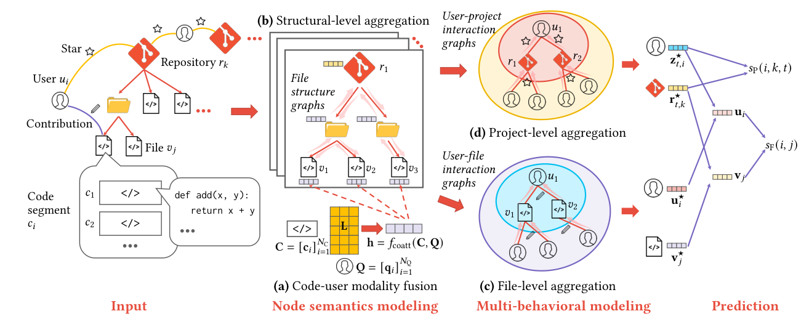

Code Recommendation for Open Source Software Developers (面向开源软件开发者的代码推荐)
- 会议/期刊: WWW 2023 (The Web Conference)
- 作者与机构: Yiqiao Jin (Georgia Tech)、Yunsheng Bai、Yanqiao Zhu、Yizhou Sun、Wei Wang (UCLA)
- 推荐链路定位: 召回（文件级贡献任务匹配）
- 研究方向: 图神经网络与知识图谱推荐 / 多模态推荐
- 论文原文: 论文原文链接
- 开源代码: 暂未开源（原文声明录用后释放数据集与代码；文中 PyGithub 链接仅为数据抓取依赖）
TL;DR (1分钟核心速览)
面向 OSS 开发任务匹配，本文首次形式化"代码推荐"问题：在给定开发者历史交互、源码语义与项目层级文件结构下预测其未来提交（commit）的文件。痛点在于 commit 信号极稀疏（密度 5×10⁻⁵~1.5×10⁻⁴），且文件之间存在目录层级语义。CODER 以用户-文件-仓库异构图联合建模微观贡献与宏观 star/watch 行为，用 CodeBERT + 共注意力把代码片段与历史贡献者融合成文件表征，再在文件树 GAT 上聚合。全库排序协议下，FS 数据集 NDCG@5 相对最强基线 NCL 提升 37.1%，冷启动用户 NDCG@3 提升 38.7%~53.0%。
Background & Motivation (背景与核心矛盾)
- 主流范式: 传统协同过滤/图协同过滤（NGCF、LightGCN、NCL）把用户-物品交互建成二部图做链路预测，物品侧仅有一个可学习 ID 向量。
- 前人局限: ① commit 属"高成本自愿行为"，交互极度稀疏，直接建模贡献关系导致用户/物品表征失真并加剧冷启动；② 文件不是独立物品——
models/roberta/modeling_roberta.py与models/bert/modeling_bert.py的功能相似性由目录树而非 ID 决定，传统模型无法把代码语义与项目结构对齐。 - 核心洞察 (Key Insight): 相似主题仓库常复用相同的命名约定与文件组织方式（图 1 的
transformers例），因此文件树是可跨项目迁移的结构先验；同时 star/watch 等宏观行为反映"广泛兴趣"，可在微观 commit 缺席时提供监督。 - 本文切入点: 将"预测用户下一条 commit 文件"重构为异构图上的 user–file 链路预测，并把宏观行为信号通过 MLP 注入文件级打分的双方表征。
Method (核心方法设计)
1. 整体框架 (Overall Architecture)
CODER 分两大组件。Node Semantics Modeling：把每个文件源码切成 \(N_C\)个代码片段并经 CodeBERT 编码成特征图\(C\in\mathbb{R}^{N_C\times d}\)，把采样到的\(N_Q\)个历史贡献者编码成\(Q\)，用共注意力（co-attention）把"用户注意力空间"变换到"代码注意力空间"，选出显著代码片段得到文件表征\(h\)；随后把仓库展开为"文件–目录–仓库"层级异构图，用 3 层 GAT 聚合目录 TF-IDF 与仓库元信息，得到结构增强表征\(\tilde{h}\)，作为文件/仓库的初始嵌入。Multi-behavioral Modeling：在 user–file 二部图上做 LightGCN 式传播得微观偏好，在每类 user–project 行为图（star/watch/fork）上各做一次传播得宏观兴趣，层间均值池化后按行为聚合，再与微观表征拼接经 MLP 融合，内积打分、BPR + 结构对比损失联合优化。
flowchart TD
A["源码片段 C + 历史贡献者 Q"] --> B["Code-User 共注意力融合"]
B --> C["文件树 GAT 结构聚合"]
C --> D["user-file 图传播 (微观)"]
C --> E["user-project 多行为图传播 (宏观)"]
D --> F["MLP 融合 + 内积打分"]
E --> F
2. 关键设计拆解 (Key Designs)
- Code-User 共注意力模态融合（解决"文件语义多峰 + 贡献者属性注入"）: 整文件池化会混淆同一文件中 BERT 实现、参数加载、词嵌入等多类语义；同时一次 commit 相当于把作者的编程风格注入文件。故先算代码-用户亲和矩阵再做代码侧注意力： \(\mathbf{L}=\tanh(\mathbf{C}\mathbf{W}_O\mathbf{Q}^{\top}),\ \mathbf{H}=\tanh(\mathbf{W}_C\mathbf{C}^{\top}+\mathbf{W}_Q(\mathbf{L}\mathbf{Q})^{\top}),\ \mathbf{a}=\mathrm{softmax}(\mathbf{w}_H^{\top}\mathbf{H}),\ \mathbf{h}=\mathbf{a}^{\top}\mathbf{C}\) 直觉：把"谁写过这个文件"作为 query 去检索最相关的代码片段，使文件向量同时携带语义与"贡献者画像"。
- 文件树结构聚合（解决"物品侧无层级关系"）: 目录名按下划线/驼峰切词后 TF-IDF 编码，仓库用 owner、创建时间、Top-5 语言编码，统一映射到文件同一潜空间，在层级图 \(G_S\)上做 GAT 聚合\(\tilde{\mathbf{h}}=f_{\mathrm{GNN}}(\mathbf{h},G_S)\)。这样同一目录下文件共享邻居信息，等价于给稀疏文件补上"结构近邻"的协同信号。
- 多行为分解传播 + 训练目标: 文件级用 \(\mathbf{E}^{(l)}=\mathbf{D}^{-\frac{1}{2}}\mathbf{A}\mathbf{D}^{-\frac{1}{2}}\mathbf{E}^{(l-1)}\)（\(\mathbf{A}\)为 user–file 邻接），行为\(t\)用\(\mathbf{Z}_t^{l}=\mathbf{D}_t^{-\frac{1}{2}}\boldsymbol{\Lambda}_t\mathbf{D}_t^{-\frac{1}{2}}\mathbf{Z}_t^{(l-1)}\)，各层均值池化后\(\mathbf{u}_i=\mathrm{MLP}([\mathbf{u}_i^{\star}\|\mathbf{z}_i^{\star}])\)、\(\mathbf{v}_j=\mathrm{MLP}([\mathbf{v}_j^{\star}\|\mathbf{r}_{\phi(j)}^{\star}])\)。损失为 \(\mathcal{L}=\mathcal{L}_{F}+\lambda_1\sum_t\mathcal{L}_{P}^{t}+\lambda_2(\mathcal{L}_{UC}+\mathcal{L}_{VC})+\lambda_3\|\Theta\|^2\)其中各项均为 BPR 成对损失，\(\mathcal{L}_{UC}/\mathcal{L}_{VC}\)为 InfoNCE 式结构对比（\(\eta=2\)、\(\tau\)为温度）。负采样为均匀随机负采样（非 in-batch/hard negative）；CodeBERT 表征离线算一次并缓存，每测试样本推理 1.138 ms（LightGCN 1.073 ms、MF 0.804 ms），总复杂度\(O((N_C+N_Q)|V|+|E|+|\mathbf{A}^{+}|+\sum_t|\boldsymbol{\Lambda}_t^{+}|)\)。
Experimental Setup & Evaluation Protocol (实验设置与评估协议)
- 数据集与预处理: 从 GitHub API + PyGithub 抓取，保留 star ≥ 250 且贡献者 ≥ 3 的仓库（排除私用仓库）、贡献史 ≥ 3 个月；按 GitHub topics 选 ML/DB/FS 三个子领域各随机采 300 个仓库。
| 数据集 | #Users | #Items(Files) | #Interactions | 密度 | 场景说明 |
|---|---|---|---|---|---|
| ML | 21,913 | 239,232 | 663,046 | 1.26×10⁻⁴ | 机器学习主题仓库 |
| DB | 30,185 | 415,154 | 1,935,155 | 1.54×10⁻⁴ | 数据库主题，最稠密 |
| FS | 51,664 | 568,972 | 1,512,809 | 5.14×10⁻⁵ | 全栈主题，最稀疏 |
- 数据划分与防穿越: 全局时间戳切分——以 Unix 时间戳
1550000000与1602000000为界划分 train/valid/test，测试期交互严格晚于训练期；仅保留在 train 与 test 均有 ≥1 交互的用户。 - 排名评测协议: 全候选排序（Full-Ranking），不做负采样截断。intra-project 设置下对用户已交互仓库内的文件排序；cross-project 设置下对用户未交互仓库内的文件排序（候选池更大）；冷启动定义为训练集交互 ≤2 的用户，报 NDCG/Hit/MRR@{3,5}。
- 对比基线与超参: 三组基线——G1 矩阵分解 MF；G2 神经类 MLP、NeuMF；G3 图类 NGCF、LightGCN、NCL。所有基线共享同一 CodeBERT 文件嵌入，并把仓库 one-hot 与项目级 multi-hot 注入用户表征以保证公平。嵌入维度 \(d=32\)、\(N_C=8\)、\(N_Q=4\)、传播层数\(L=4\)、batch 1024、Adam，\(\lambda_1\in\{10^{-2},10^{-1},1\}\)、\(\lambda_2=10^{-6}\)。
Key Experimental Results (实验关键数据)
1. 主实验对比 (Main Results)
| 数据集 | 指标 | MF | MLP | NeuMF | NGCF | LightGCN | NCL | CODER | Improv. |
|---|---|---|---|---|---|---|---|---|---|
| ML | NDCG@20 | 0.072 | 0.081 | 0.084 | 0.100 | 0.116 | 0.120 | 0.141 | 17.9% |
| ML | Hit@20 | 0.324 | 0.343 | 0.346 | 0.407 | 0.457 | 0.466 | 0.540 | 15.8% |
| ML | MRR@20 | 0.113 | 0.127 | 0.130 | 0.154 | 0.185 | 0.213 | 0.230 | 8.2% |
| DB | NDCG@20 | 0.088 | 0.083 | 0.088 | 0.103 | 0.091 | 0.125 | 0.160 | 27.3% |
| DB | Hit@20 | 0.335 | 0.338 | 0.362 | 0.454 | 0.422 | 0.437 | 0.588 | 29.5% |
| DB | MRR@20 | 0.143 | 0.132 | 0.143 | 0.182 | 0.150 | 0.264 | 0.280 | 6.0% |
| FS | NDCG@20 | 0.067 | 0.070 | 0.073 | 0.090 | 0.095 | 0.110 | 0.146 | 32.7% |
| FS | Hit@20 | 0.307 | 0.321 | 0.335 | 0.406 | 0.414 | 0.451 | 0.559 | 23.9% |
| FS | MRR@20 | 0.114 | 0.115 | 0.122 | 0.150 | 0.163 | 0.187 | 0.245 | 31.4% |
冷启动（交互 ≤2 用户，NDCG@3）：ML 0.126 vs NCL 0.090 (↑40.9%)；DB 0.119 vs 0.075 (↑53.0%)；FS 0.128 vs 0.092 (↑38.7%)。跨项目设置下在 \(K\ge 20\) 时优势最明显。
2. 消融实验 (Ablation Study)
| 变体 | 移除/替换的组件 | ML 上相对全模型 CD 的变化 |
|---|---|---|
| CD (full) | — | 最优（6 个变体中最高） |
| CD-P | 去掉项目级多行为聚合 | 跌幅最大（显著↓） |
| CD-S | 去掉文件树结构聚合 | 明显↓（次之） |
| CD-C | 去掉结构对比损失 \(\mathcal{L}_{UC},\mathcal{L}_{VC}\) | 中等↓ |
| CD-F | 去掉 code-user 共注意力融合 | 较小↓ |
| CD-E | CodeBERT 换为 TF-IDF 代码特征 | 小幅↓（但仍劣于 CD-F） |
3. 关键实验发现 (Key Findings)
- 越稀疏收益越大：FS 密度最低（5.14×10⁻⁵），NDCG@5 相对提升达 37.1%，而较稠密的 DB 仅 29.0%，说明项目级宏观行为确实在文件级 commit 稀缺时补足了监督信号。
- 宏观行为是第一功臣：消融中 CD-P（去项目级聚合）跌幅最大、CD-S（去结构聚合）次之，而 CD-E（丢弃 CodeBERT 语义）跌幅最小且仍优于 NCL——即"行为 > 结构 > 代码语义"是该任务的信号强度排序。
- 冷启动与跨项目双赢：冷启动用户 NDCG@3 提升 38.7%~53.0%（远高于全体用户的 3%~6% MRR 提升），说明共注意力融合的"贡献者画像"在少量交互下替代了协同信号；跨项目场景 \(K\ge 20\) 优势扩大，验证模型同时学到"跨仓库选哪个项目"与"项目内选哪个文件"。
Highlights & Limitations (亮点、对比与审稿批判)
- 与代表作对比 (vs. Prior Work): 相较 LightGCN/NCL 这类"物品 = 单 ID 向量"的图协同过滤，CODER 把物品拆成"语义片段 + 结构位置 + 所属仓库"三元组，并在物品侧完成跨层级桥接，因此本质区别在于物品表征不再依赖 ID 学习；相较 API 推荐、Good-First-Issue 推荐等 OSS 推荐工作，本文把行为粒度下沉到文件级 commit 且覆盖多语言（300+ 语言），任务定义本身即贡献。
- 可迁移亮点: ① "用历史交互者作为 query 做内容侧共注意力"可迁移到短视频/商品图文等冷启动物品表征；② 用"层级文件树/类目树"作为结构先验给稀疏长尾物品补协同邻居，思路可移植到电商类目或 POI 地理层级。
- 审稿级局限批判: ① 代码片段编码依赖 CodeBERT 离线缓存，论文未给出整体训练耗时与显存占用，1.138 ms/样本的推理代价在高并发下仍高于 MF 约 40%，且 \(N_C=8\)截断会丢失长文件语义；② 评估仅覆盖 GitHub 单一平台、且只做"已有文件"推荐，无法处理新建文件（作者亦承认）；③ 基线虽注入仓库 one-hot 与项目级 multi-hot，但未做显著性检验（无\(p\) 值/方差报告），跨项目曲线也缺少误差棒。
Rating (四维评分)
- 方法创新性 (Novelty): ⭐⭐⭐⭐ （首次形式化文件级代码推荐，宏观/微观异构图桥接 + 层级结构聚合的组合虽为成熟算子的新拼装，但问题定义与物品侧建模思路新颖）
- 评估协议与实验扎实度 (Protocol & Experiments): ⭐⭐⭐⭐ （三套大规模真实数据集 + 全局时间戳防穿越 + 全库排序 + intra/cross/cold-start 三种设定齐全，扣分在缺少显著性检验与方差报告）
- 写作与数学规范度 (Clarity & Rigor): ⭐⭐⭐⭐ （符号统一、复杂度与推理时延分析到位，但共注意力各矩阵的角色解释略简，部分基线注入方式在正文中描述偏短）
- 工业落地与复现价值 (Industrial & Practical Value): ⭐⭐⭐⭐ （GitHub 场景可直接部署为 maintainer 任务分配工具，代码/数据承诺开源；扣分在 CodeBERT 缓存与文件树构建的工程成本未量化）